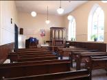
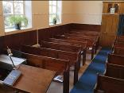
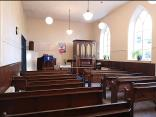
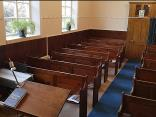
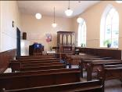
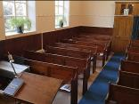

In 1869 Mr James Cox, the owner of Spring House, donated a small block of land at the bottom of his garden to a group of Wesleyan Reformers who lived in the village. On this small parcel of land, a Chapel was built that replaced the previous house of worship which is now number 4 Chapel Row. For one hundred and fifty years, the Chapel on Back Lane was used for services and Sunday School.
The last service was held in the Chapel in February 2019 and then after another year of unsuccessfully trying to encourage increased attendance, the painful decision was taken to close permanently from April 2020.
The trustees of the Wesleyan Chapel are now going to have to sell the building, which Souldern village is being given the opportunity to buy at a preferential price. This offer is being made in good faith on the condition that the building must be used for the promotion of community wellbeing, village activities and social gatherings. All proceeds from this sale will be returned to The Wesleyan Reform Union of Churches for their central funds.
Following preliminary discussion with the Trustees, the village is being given the time to put a plan together that will secure the building for future generations. If collectively we do not act now, the Chapel building will be sold to a third party.
Prior to the latest lockdown restrictions being imposed, the steering group* had intended to invite all households within the parish to an Open Morning (21st November) at the Chapel with a view to stimulating everybody’s interest, ideas and buy-in to the project. Whilst it will not be possible to do this as originally intended, it is hoped that one day beyond lockdown this will be rearranged.
*The steering group is a cross section of villagers hoping to save the Chapel from being sold off externally and is open to all interested parties.
If the opportunity is not seized now, there will not be a second chance.
If collectively we have the appetite to purchase the Chapel, there are three registered charities in the village under whose ownership the Chapel could be placed:
In discussions to date, the steering group believe that the best fit will be the Village Hall charity. It would allow two important village buildings to be used in conjunction with one another to support a wider variety of activities and uses. This would also avoid conflict between the two buildings.
The Chapel, being a smaller more intimate venue is better suited to host fixed activities such as Sunday School, youth club, toddlers group, sports and social club, occasional Chapel events and after Church gatherings.
This option would also enable the Chapel to become the new base for a permanent village reading room and to establish a central archive for the many village photos, maps and documents we collectively wish to retain.
The Village Hall, with its larger capacity and ample car parking, would be more focussed on larger gatherings, classes and external bookings.
Historically, management groups have grappled with the task of raising the finances required to maintain community assets and to cover the day to day running costs. It is proposed that to overcome this hurdle, parishioners will be invited to become members of a village society and pay an annual subscription which will cover entrance and use of both venues, (membership terms and conditions of which are still to be agreed). Subscriptions for corporate and not for profit organisations will also be available, plus additional income from external bookings.
We would really value your input, ideas and thoughts on how the Chapel might be repurposed. You can email us via ChapelProject@souldern.org
See also the Frequently Asked Questions section below.
Fundraising – To make this happen the village needs to raise £75,000. Whilst the sum is daunting, the target allows for legal fees, maintenance costs for the first three years and an allowance for modest alterations. Given the current COVID situation, match funding organisations such as the Lottery Heritage fund are not open for new applications. This situation may change in 2021. However, whilst we are not under any pressing time constraints yet, the view is being taken to do as much as possible without relying on the support of external sources (unless somebody in the village can give us a different view or steer).
If you feel willing and able to make a donation to help make this project a success please contact one of the people listed below. They will be happy to talk you through the various options available. If you are a UK tax payer, it is the intention to use the gift aid scheme to gain additional revenue and if, at a later stage in the process, additional grant funding is available, that will be a welcome bonus.
Ideas for use – To date, the steering group have discussed a number of varied uses for the Chapel building, and for sure we do not have a monopoly on good ideas!! So if you have a particular interest, hobby or pastime that you feel able to share with the village that could take place in either the village hall or Chapel please bring it to one of the group. (They promise not to laugh!!!) Input regarding ideas for commercial or rental income from either building is also welcome.
Organisation – If you are feeling particularly bold, why not stick your hand up to get involved with either venue. Being a village run organisation there will be many tasks that need to be addressed, ranging from routine building maintenance through to MC’ing the finals of the annual Pool tournament….and everything in between.
Throughout the lockdowns and 2020, the village has fostered a great community spirit which everybody wants to continue once the country emerges out the other side. We have all seen first hand what a special place Souldern is and recognise how lucky we are to live here.
This is a one off opportunity to take ownership of a valuable community asset and make it an enduring centrepiece for us and future generations. We owe it to Mr James Cox and to this village to make it happen.


For more about the history of Souldern Chapel go to www.souldern.org/chapel
Please contact any of the following to find out more:
Thank you and watch this space …